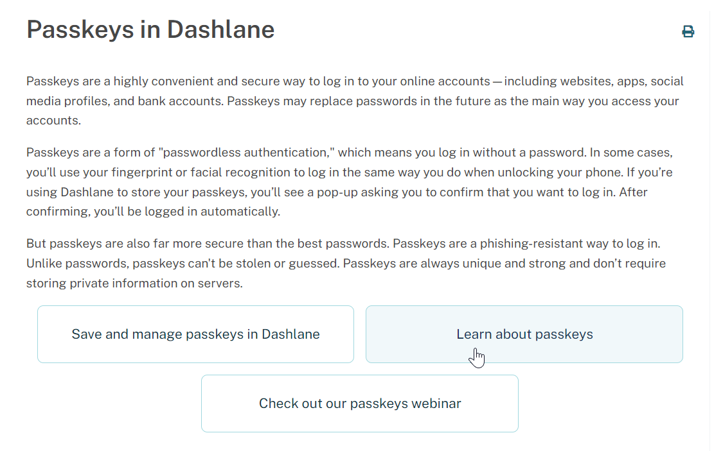

I focus on clear, plain-language writing that helps users understand complex or sensitive topics while maintaining accuracy and trust.
Problem: Our Help Center article on passkeys expanded over time as industry adoption and our own investment in passkeys grew. As the article became more overloaded with information, we saw a drop in its helpfulness score and received feedback that some visitors found the article confusing.
Solution: I revamped the article with the aim of making it easier to navigate and improving the helpfulness score.
Challenges:
Approach:
Before and after:
Results: This revamp is recent, but similar structural approaches on other topics have led to sustained increases in helpfulness scores of up to 12 percentage points.
View similar approaches on other topics:
See details
Problem: Our company upholds a zero-knowledge principle, meaning we protect user data such that even company employees don’t have access to it. We introduced a new feature that detects if a user's password has been found on the dark web. Before release, we anticipated that some users might be confused about how the feature complies with our zero-knowledge policy.
Solution: I created an FAQ entry to explain how dark web monitoring works without exposing user passwords.
See details